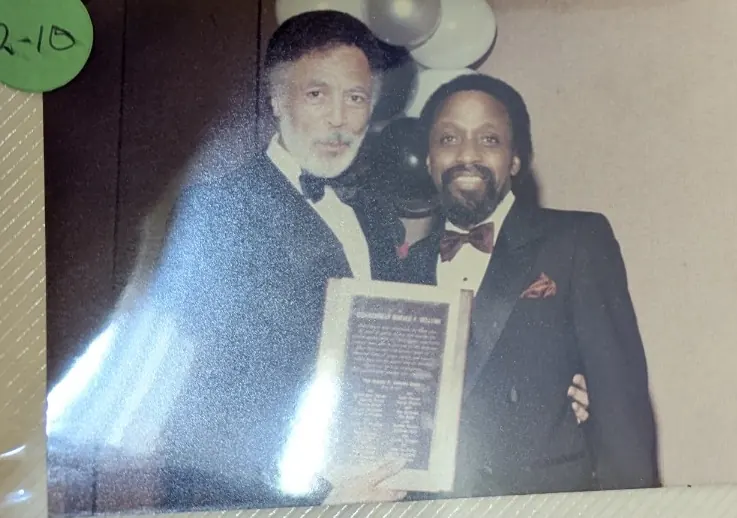

Jacob Blanchette Photography Archive
Jacob
Blanchette
Photographer · Oakland, California
Jacob Blanchette was a professional photographer whose work encompassed portraiture, official photographic assignments, and the cultural and civic life of Oakland. His photographs document people, organizations, and events, including activities associated with the Black Filmmakers Hall of Fame.
The Jacob Blanchette Photography Archive preserves his photographs and related materials, documenting his career and the histories represented in his work.
His photographic work
Explore the Collections
Arts & Culture
Film, theater, music, and the cultural institutions and gatherings Jacob photographed in Oakland and beyond.


Community & Civic Life
Political gatherings, public celebrations, and the people and organizations of Oakland's civic life.

Community & Civic Life · 1987
Ronald V. Dellums
Jacob photographed a gala honoring Congressman Ronald V. Dellums on May 31, 1987, at Oakland's Hyatt Regency Hotel, recording speeches, performances, and guests.
Explore the 1987 gala →Photograph by Jacob Blanchette · View photo record and citation →
Portraiture
Individual and group portraits from different periods of Jacob's photographic career.
Collection in development
His life and career
The Photographer
Born in Texas and raised in Oakland, Jacob Samuel Blanchette Jr. was a professional photographer whose work encompassed portraiture and the documentation of Oakland's cultural and civic life. He owned and operated Jacob Blanchette Photographic Services. His surviving photographs include events associated with the Black Filmmakers Hall of Fame, the Black Repertory Group, and a 1987 Oakland gala honoring Congressman Ronald V. Dellums. The collection also includes photographic prints, negatives, albums, cameras, and related equipment.
Read His Biography →Preservation and research
About the Archive
The Jacob Blanchette Photography Archive is dedicated to preserving, documenting, and sharing his photographic work. The collection is being inventoried and digitized, with ongoing research to identify the people, places, and events represented in his photographs.
Learn About the Archive →